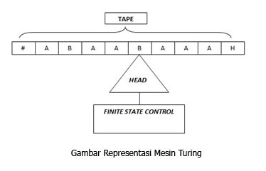

Mesin Turing adalah model komputasi teoritis yang ditemukan oleh Alan Turing, berfungsi sebagai model ideal untuk melakukan perhitungan matematis. Walaupun model ideal ini diperkenalkan sebelum komputer nyata dibangun, model ini tetap diterima kalangan ilmu komputer sebagai model komputer yang sesuai untuk menentukan apakah suatu fungsi dapat selesaikan oleh komputer atau tidak (menentukan computable function). Mesin Turing terkenal dengan ungkapan ” Apapun yang bisa dilakukan oleh Mesin Turing pasti bisa dilakukan oleh komputer.” Mesin Turing sendiri merupakan model yang sangat sederhana dari komputer. Secara esensial, mesin Turing adalah sebuah finite automaton yang miliki sebuah tape tunggal dengan panjang tak terhingga yang dapat membaca dan menulis data. Mesin Turing menggunakan notasi seperti ID-ID pada PDA untuk menyatakan konfigurasi dari komputasinya.

Cara Kerja Mesin Turing
Pada PDA (Push Down Otomata) digunakan stack untuk menyimpan dan mengakses data inputan. Tetapi hal ini menyebabkan kemampuan kerja PDA yang terbatas karena pada prinsip stack,hanya data teratas yang bisa diakses. Ini menyebabkan keterbatasan PDA. Mesin turing menggunakan pita (tape) sebagai memori yang berbentuk array . Hal ini menyebabkan data pada pita dapat diakses dari mana saja.
Spesifikasi Mesin Turing
• Mesin turing memiliki pita berupa array sebagai memori yang dapat menyimpan sebuah simbol tunggal
• Mesin turing memiliki head sebagai penunjuk posisi yang sedang diakses pada pita
• Head dapat bergerak kekanan/kekiri pada pita sesuai fungsi transisi yang ditetapkan untuk membaca inputan
• Head juga dapat melakukan penulisan/ mengubah isi pita
Sebuah mesin turing secara formal dinyatakan dalam 7 tupel
M = (Q, S, G, d, S, F, b)
Dimana:
Q = himpunan state
S = himpunan simbol input
G = simbol pada pita,termasuk blank
d = fungsi transisi
S = state awal (S anggota elemen Q)
F = himpunan state akhir
b = simbol kosong (menandakan bagian yang tidak terisi)
Prinsip Kerja mesin Turing
1. Lihat state semula dan simbol yang ditunjuk head
2. Berdasarkan fungsi transisinya,tentukan: -state berikutnya -Lakukan penulisan ke pita Gerakkan head ke kanan dan ke kiri
3. Bila dari pasangan state dan simbol yang ditunjuk head tidak ada lagi fungsi
transisinya,berarti mesin turing berhenti
4. Bila mesin turing berhenti di dalam state final (F) , berarti input diterima. Sebaliknya jika mesin berhenti tidak pada state akhir,maka berarti inputan tersebut ditolak.
Contoh Mesin Turing Sederhana
Sebuah contoh mesin Turing dapat dibangun untuk melakukan komputasi sederhana yang didefinisikan seperti ini: Tentukan ada berapa angka 1 dalam sebuah string berbentuk 0111...110 (rangkaian angka 1 yang didahului dengan 0 dan diakhiri juga dengan 0), apakah berjumlah genap atau berjumlah ganjil. Jika angka 1 di antara dua angka 0 berjumlah genap, tulis sebuah angka 0 pada salah satu sel dari tape mesin Turing. Jika angka 1 di antara dua angka 0 berjumlah ganjil, tulis sebuah angka 1 pada salah satu sel dari tape mesin Turing.
Untuk menyelesaikan masalah komputasi ini, kita buat tiga buah State bagi mesin Turing ini, yaitu Start, Even, dan Odd. Di samping itu kita buat sekumpulan aturan Transisi yang digunakan oleh mesin Turing ini untuk melakukan proses komputasinya. Aturan-aturan Transisi tersebut dapat dituliskan demikian:
1. Jika mesin Turing berada pada status Start, dan membaca simbol 0 pada Tape, lakukan hal berikut: Pindah status menjadi status Even, Ganti simbol 0 pada Tape dengan Blank (atau Hapus simbol 0 pada Tape), dan Bergerak ke kanan satu sel.
2. Jika mesin Turing berada pada status Even, dan membaca simbol 1 pada Tape, lakukan hal berikut: Pindah status menjadi status Odd, Ganti simbol 1 pada Tape dengan Blank, dan Bergerak ke kanan satu sel.
3. Jika mesin Turing berada pada status Odd, dan membaca simbol 1 pada Tape, lakukan hal berikut: Pindah status menjadi Even, Ganti simbol 1 pada Tape dengan Blank, dan Bergerak ke kanan satu sel.
4. Jika mesin Turing berada pada status Even, dan membaca simbol 0 pada Tape, lakukan hal berikut: Pindah status menjadi Halt, Ganti simbol 0 pada Tape dengan 0, dan tetap pada sel tersebut (tidak perlu berpindah ke kiri maupun ke kanan).
5. Jika mesin Turing berada pada status Odd, dan membaca simbol 0 pada Tape, lakukan hal berikut: Pindah status menjadi Halt, Ganti simbol 0 pada Tape dengan 1, dan tetap pada sel tersebut.